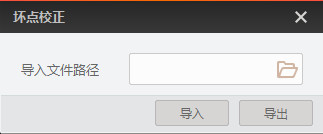

zh-CN
坏点校正
坏点校正功能可对相机的坏点信息进行导入导出。
在设备列表选择需要导入或导出坏点信息的相机。
双击连接相机。
设备列表选中相机，右键单击选择
坏点校正
进入坏点校正界面，如下图所示。

图 1 坏点校正
可选操作：
导出坏点信息文件。
点击
导出
按钮。
选择导出文件的保存路径并
保存
。
此时会显示实时导出进度直至提示“导出成功”。
可选操作：
导入坏点信息文件。
点击
选择需要导入的mfa坏点信息文件，并
打开
。
点击
导入
按钮。
此时会显示实时导入进度直至弹出“导入成功”的提示窗口。
点击提示窗口的
确定
。
设备管理
网口相机管理
U3V相机管理
PCIe设备管理
串口设备管理
GenTL管理
事件监视
添加虚拟相机
坏点校正
 选择需要导入的mfa坏点信息文件，并打开。
选择需要导入的mfa坏点信息文件，并打开。
选择需要导入的mfa坏点信息文件，并打开。
选择需要导入的mfa坏点信息文件，并打开。